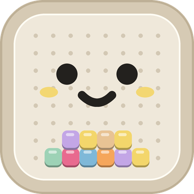

단숙이 만든 사람 · 1/3
첫 글 · 새 게시글로 올리기
월요일에 공부 계획 세움. 화요일에 한 번 놓침. 수요일부터 그냥 안 하게 됨. 하루 빠지면 계속 놓게 되는 사람?
다른 초안의 짧고 구체적인 도입을 받아들여 기존 글을 다듬고, 공부법과 시작 부담을 다루는 두 편을 더했습니다. 각 편은 첫 글과 자기 답글을 이어 붙이는 구성입니다.

월요일에 공부 계획 세움. 화요일에 한 번 놓침. 수요일부터 그냥 안 하게 됨. 하루 빠지면 계속 놓게 되는 사람?
그래서 내가 만든 단숙이는 쉬어도 공부해서 모은 키링 조각이 안 사라져. 다시 열면 거기서 이어가면 돼. 자꾸 끊겨도 다시 해 보고 싶은 학생에게 잘 맞았으면 좋겠어.
너는 공부 하루 빠지면 바로 돌아오는 편이야? 아니면 그때부터 쭉 놓게 되는 편이야?
단어장 새로 시작할 때마다 또 abandon부터. 앞장은 익숙한데 뒤쪽은 아직 낯선 사람?
익숙한 단어도 뜻을 가리고 보면 바로 떠오르는지 확인할 수 있어. 내가 만든 단숙이에서는 새 단어를 카드로 먼저 익히고, 문제의 보기를 1초 늦게 띄워. 그사이에 뜻을 먼저 꺼내 보라고. 영상에서도 한번 해 봐. 정답은 안에 있어.
단숙이의 공부 방식은 학습·기억 연구 논문 15편을 참고해 설계했어. 왜 먼저 떠올리고, 왜 날을 두고 다시 보는지 참고한 연구는 앱 안의 ‘단숙이 공부법’에 모아 놨어.
뜻을 보면 알겠는데 가리면 갑자기 안 떠오르는 단어, 너는 뭐가 있어?
학원 단어 시험 통과. 며칠 뒤 같은 단어에서 또 멈칫. 시험 직전에 외운 단어는 다음 시험 전까지 다시 안 보게 되기도 하지.
그래서 단숙이는 외운 단어를 2일, 7일, 21일 뒤에 다시 물어봐. 틀렸으면 그 단어를 다시 공부하고, 모아 둔 키링 조각은 그대로 두고. 안 잊게 해 준다는 약속보다 다시 만날 순서를 챙기는 앱을 만들고 싶었어.
단어 시험이 끝나도 복습하는 편이야? 아니면 다음 시험 범위 외우느라 넘어가?
공부할 시간 5분 남음. 오늘 분량은 못 끝낼 것 같음. 결국 아예 안 함. 이렇게 넘겨 버린 시간 있어?
그런 날에도 열 수 있는 앱이면 좋겠어서 단숙이에 ‘1분만’을 넣었어. 익히던 단어 몇 문제를 짧게 푸는 기능이야. 하루 분량을 1분에 외운다는 뜻은 아니고, 오늘도 조금은 이어갈 수 있게 하려는 거.
너는 시간이 짧게 남으면 조금이라도 해? 아니면 제대로 할 수 있을 때까지 미뤄?
단어·숙어 144개를 외우면 앱 안에 키링 하나가 생겨. 게임기, 딸기, 고양이… 근데 돈으로는 못 사.
캡슐을 돌려 다음 도안을 뽑고, 외운 단어가 쌓일 때마다 한 조각씩 드러나. 공부한 흔적을 디지털 키링으로 남기고 싶어서 이렇게 만들었어. 단숙이라는 영단어·숙어 앱이야.
다음 키링엔 어떤 그림 넣을까? 직접 모으고 싶은 그림으로 추천해 줘.
“단어 외웠어?”라고 묻기 전에 이런 걸 한 번 건네면 어떨까. 아이한테 가볍게 권할 수 있는 단어 공부 앱을 만들고 싶었어.
단숙이는 고등학생 아이의 단어 공부를 돕고 싶어서 내가 직접 만든 앱이야. 먼저 카드로 보고, 뜻을 떠올리고, 날을 두고 다시 복습해. 공부한 단어는 디지털 키링으로 쌓이고. 가입도 광고도 넣지 않았어.
공부 방식은 학습·기억 연구 논문 15편을 참고했어. 먼저 뜻을 떠올려 보기, 시간을 두고 다시 확인하기 같은 방법들이야. 공부하는 이유를 알고 권할 수 있게 참고한 논문도 앱 안의 ‘단숙이 공부법’에 넣었어.
아이에게 공부 앱을 권한다면 어떤 점부터 보게 돼? 재미있어 보이는지, 공부 방식이 어떤지, 아니면 다른 게 더 중요해?
단어를 오래 기억하려면 공부할 때 뭘 바꿔야 할까? 학습·기억 연구 논문 15편을 참고하면서 단숙이에 넣은 방법 중 세 가지야. 1. 뜻을 보기 전에 먼저 떠올리기 2. 시간을 두고 다시 확인하기 3. 틀리면 정답을 확인하고 다시 풀기
앱에서는 이렇게 만들었어. 새 단어는 카드로 먼저 익히고, 문제의 보기는 1초 뒤에 띄워. 외운 단어는 2일, 7일, 21일 뒤에 다시 물어봐. 틀렸을 땐 정답과 예문을 보고 다시 공부하고. 먼저 꺼내 보고, 다시 만나고, 틀린 건 고치는 흐름이야.
공부 방식은 연구를 참고해서 설계한 거야. 단숙이로 얼마나 달라지는지는 실제 사용으로 확인해 가려고 해. 참고한 논문 15편과 각 방법을 넣은 이유는 앱 안의 ‘단숙이 공부법’에서 볼 수 있어.
너는 셋 중 어떤 걸 하고 있어? 다시 읽는 시간이 더 많은지, 가리고 떠올리는 시간이 더 많은지도 궁금해.
공부하려고 앱을 켰는데 가입 → 광고 → 결제부터 만나면 시작하기도 전에 지칠 수 있잖아.
그래서 내가 만든 단숙이는 가입도 광고도 넣지 않았어. iPhone에서 무료로 시작할 수 있어. 먼저 카드로 단어를 익히고 문제를 푸는 앱이야.
궁금하면 여기서 볼 수 있어. 수능 영단어·숙어 앱 ‘단숙이’야. https://apps.apple.com/kr/app/id6819707350
공부 앱을 써 보려다가 어느 순간에 닫게 돼? 시작할 때 번거로운 것도 궁금해.
판단의 기준은 학생에게 구체적으로 와닿는지, 개발자의 실제 경험처럼 꾸미지 않는지, 현재 기능과 연구 범위를 정확히 설명하는지입니다.
| 다른 초안의 제안 | 판단 | 반영 위치 | 이유 |
|---|---|---|---|
| 짧은 장면으로 시작하고 기능은 답글에 | 수용 | 1~5편 첫 글 | 기존의 긴 설명을 줄이고 구체적인 상황으로 시작. 만든 사람의 신분은 답글에서 밝힘. |
| 월요일 계획 → 화요일 실패 | 수정 수용 | 1편 | 요일 세 개의 리듬을 유지하고 ‘망함’을 ‘한 번 놓침’으로 바꿈. 쉬어도 조각이 남는 기능과 연결. |
| 단어 시험 통과 → 며칠 뒤 기억 안 남 | 수정 수용 | 2·3편 | ‘하나도 기억 안 남’, ‘원래 다 날아가’ 대신 단어에서 다시 멈칫하는 장면으로 표현. |
| 144개와 구체적인 키링 그림 | 수용 | 5편 | 실제 확인한 게임기·딸기·고양이를 사용. 단어·숙어 완성의 누적이며 앱 안의 디지털 키링임을 명시. |
| 공부법을 세 줄로 요약 | 수정 수용 | 새 7편 | 15편 전체를 세 줄로 환원하지 않고, 참고한 내용 중 앱에 넣은 세 방법을 선정. 세 번째는 85% 대신 정답 확인과 재학습. |
| 가입·광고·결제의 시작 부담 | 수정 수용 | 새 8편 | 현재의 무료·가입 없음·광고 없음만 설명. 온보딩이 있으므로 ‘열면 바로 단어’라는 문장은 사용하지 않음. |
| 85% 맞힐 때 가장 빨리 는다 | 미수용 | 게시글에서 제외 | 원 연구는 특정 이진 분류 과제와 학습 알고리즘·신경망 모델에 관한 결과. 고등학생 영단어의 보편적 최적 정답률로 소개하지 않음. |
| 2·7·21일이 연구가 정한 최적 간격 | 미수용 | 3·7편에서 구분 | 간격을 두는 학습 원리와 앱에서 채택한 날짜를 구분. 이 날짜 자체가 모두에게 최적이라고 쓰지 않음. |
| 의지 문제가 아님 / 문법이 아니라 단어 문제 | 미수용 | 원인 단정 제외 | 공부가 끊기는 이유와 독해의 어려움을 단일 원인으로 진단할 근거가 없음. |
| the와 and뿐 / 정상임 ㅋㅋ / 나만 그럼 | 수정 또는 제외 | 학생을 낮춰 보는 인상 줄이기 | 학생의 실력을 놀리거나 개발자가 직접 겪은 학생 경험인 것처럼 보일 표현을 줄임. |
| 15편을 읽었다 / 연구로 효과 입증 | 수정 | 2·6·7편 | 현재 확인 가능한 사실은 앱의 참고 연구 목록 15편과 설계에의 활용. ‘참고해 설계했다’로 통일. |
| 숙어 510개 / 580개 | 보류 | 전체 글에서 수록 수 생략 | 대안 초안은 510개, 현재 저장소 스토어 설명은 580개로 불일치. 배포 버전 기준 확인 전 채택하지 않음. |
| 예비 고1 겨울방학 소재 | 보류 | 후속 계절 소재 | 주제는 유용하지만 모든 학생에게 문법·인강보다 단어 3천 개가 먼저라고 일반화하지 않음. 이번에는 핵심 8편까지만 반영. |
| 10대 75만·21시 최적·링크를 늦게 달면 유리 | 미채택 | 게시 본문·운영 규칙에서 제외 | 현재 자료의 측정 시점·표본·인과 근거를 확인하지 못함. 반응을 확언하지 않음. |
연구 확인: Wilson 외(2019), 85% 규칙의 적용 범위 · Dunlosky 외(2013), 인출·분산 학습 검토. 앱 내부 참고 연구 목록의 DOI 15개도 대조했습니다. 앱 자체의 효과를 검증한 15편이라는 의미로 쓰지 않았습니다.
비교한 초안: /Users/chanoo/Projects/dansuki-app/marketing/threads-students.html. 원본은 변경하지 않았습니다.
개발자 본인 계정에서 쓰는 반말 초안입니다. 총 28개 글을 각각 복사할 수 있습니다. 1~6편은 영상, 7~8편은 이미지가 연결되어 있습니다. 외부 게시·답글 작성은 하지 않았습니다.